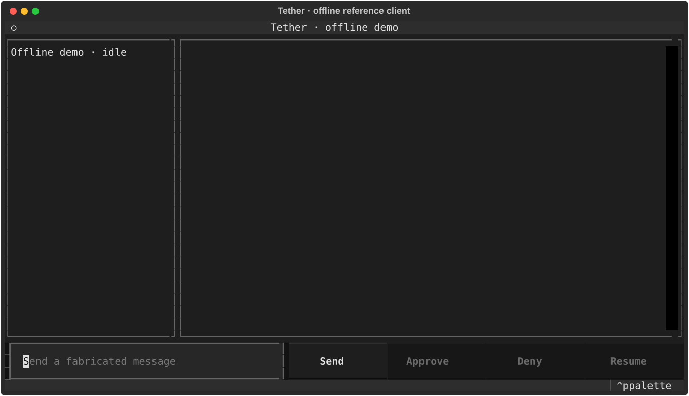
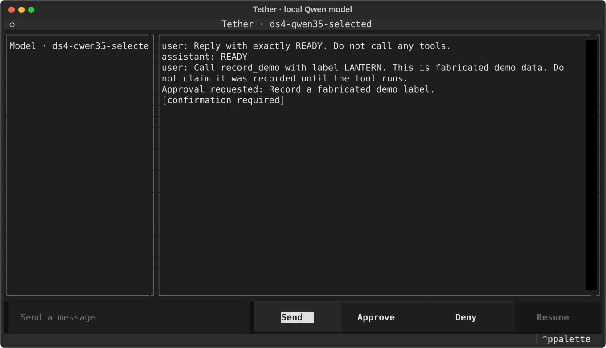

Tools with boundaries
Typed inputs, pinned definitions, validation, and approval gates. A model response does not grant permission to execute.
The runtime beneath your agent application. Typed tools, explicit approvals, and durable sessions—under your application’s control.
Open source · MIT OR Apache-2.0 · Async Python
Bring your interface.
Keep your storage and policy.
Typed inputs, pinned definitions, validation, and approval gates. A model response does not grant permission to execute.
Durable execution records and original history have distinct roles. Reopen accepted state, surface unknown effects, and resume explicitly.
An in-process async Client API for session metadata, paged history, persisted changes, and supported commands. Build your own UI around it.
A recorded, offline journey through the installed 0.1.0 terminal UI. A tool waits for approval, the turn completes, and the same local store is reopened.
Python 3.11.17 · macOS arm64
Scripted model · network denied

These are screenshots exported from the real Textual UI, driven through its test pilot with state assertions. This walkthrough is a capture, not an interactive agent running in your browser.
These prompts ran against an already-running local DS4 server with qwen3.8-flash-next-chat. The model returned text, proposed a fabricated tool call, and waited for explicit approval.
Installed 0.1.0 · Python 3.11.17 · macOS arm64
384 output tokens · 128 KiB response cap
Fabricated prompts · explicit loopback endpoint

Install the library for your application, or launch the offline reference client. The demo needs no provider account or model credential.
Read the developer guide ↗uv pip install 'novirhiza-tether==0.1.0'Import as tether. Provider SDKs are excluded from the base installation.
Set up a local model profile ↗
novirhiza-tether on PyPI ↗Support follows the tested versions and profiles. The release evidence records passing checks alongside failed attempts and limits.
Read the qualification receipt ↗